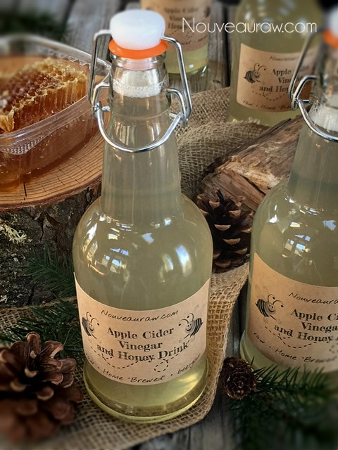
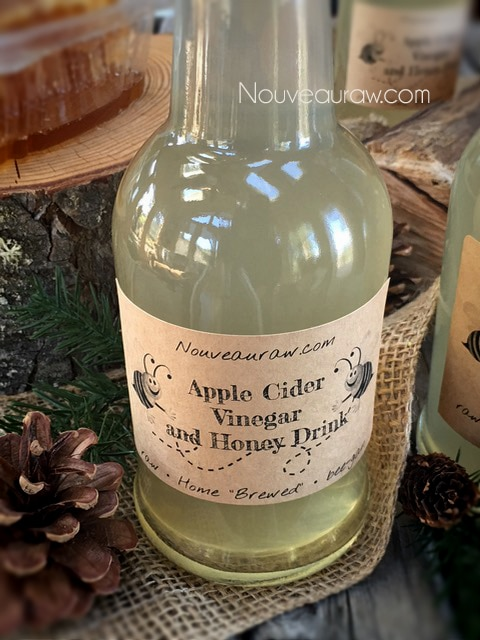
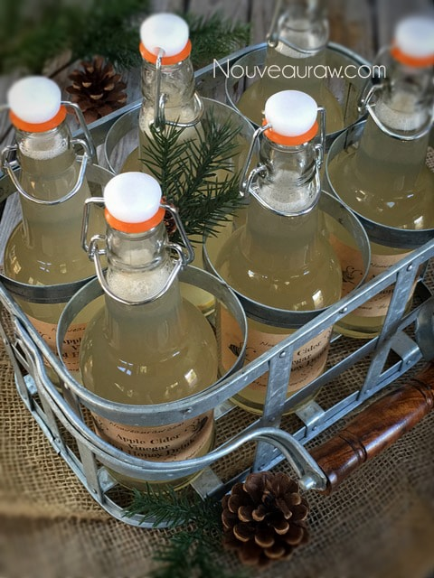

Apple Cider Vinegar and Honey Drink

~ raw, alkalizing, nut-free, vegan, Paleo ~
This recipe was created for my husband, Bob. I am not sure what started his craving for this drink, but I’m not going to hamper it by any means. He started coming home with grocery bags filled with Braggs Apple Vinegar and Honey drink. Downing one drink at $2.59 wasn’t such a big deal, but when I would find 2-3 bottles around the house in one day… well, I decided that I better learn how to make it myself. He was spending my young Thai coconut savings fund! lol
Let’s talk Ingredients:
Raw Apple Cider Vinegar – alkaline
When motoring your buggy cart down the aisles of the grocery store, steer clear of commercially distilled vinegar for this drink or any drink. They don’t have the same health properties. I have been using Braggs Raw Apple Cider Vinegar for years and loved it. It is organic, unfiltered, unheated, unpasteurized, and 5% acidity. Each bottle contains the amazing Mother of Vinegar. Mother? What the mother!?
“The mother is the dark, cloudy substance in the ACV formed from naturally occurring pectin and apple residues – it appears as molecules of protein connected in strand-like chains. The presence of the mother shows that the best part of the apple has not been destroyed. Vinegar containing the mother contains enzymes and minerals that other vinegar may not contain due to overprocessing, filtration, and overheating. The mother is the most nutritious part of the Apple Cider Vinegar and is very beneficial to digest. ” (1)
The alkalinity of apple cider vinegar can help correct excess acidity in our system and help prevent and fight infection by promoting a more balanced PH in the body. Studies have shown that diseases flourish in acidic conditions. Returning the body to a more alkaline state may help to combat a host of conditions such as bladder infections, aching muscles and joints, fatigue, allergies, and sluggish or poor digestion.
Raw Honey – alkaline
Let’s face it, a sticky smear of honey can make anything taste better, but that’s not the only reason why we added it to this drink. Unprocessed raw honey is also classified as an alkaline-forming food, and in addition to making the vinegar more palatable, it will also aid in balancing your PH levels. By the way, you don’t need pasteurized honey, pasteurization of honey is a marketing issue, not a health concern.
Amongst the many health benefits of raw honey, a critical advantage for me is that honey can be a robust immune system booster. It’s antioxidant and anti-bacterial properties can help improve the digestive system due to the live enzymes, which help the body break down foods and undigested particles. You can find a lot of “late-night” reading (here) if you want to learn more about honey.
yields 7 cups
- 6 cups water
- 3/4 cup raw apple cider vinegar
- 1/4 cup raw honey
- Fresh ginger
Preparation:
- When blending this drink, do it in two batches since the blender carafe won’t hold it all.
- Using a blender, combine the water, vinegar, and honey. Only use low to medium speeds. Otherwise, the mix will foam too much.
- Before adding the ACV, gently shake the bottle to distribute the ‘mother’ before measuring out the amount needed.
- Pour the drink mixture into glass bottles or jars, and place 1-2 slivers of ginger — Cap and place in the fridge.
- This drink should last a week, safely, in the fridge.
- It’s best to drink the concoction as fresh as possible. Even though honey and ACT are anti-bacteria, the chances of bacteria growth during storage increase as the concentration of the vinegar and honey drops with a dilution of water.
- I used (these) bottles that you can purchase from my Amazon store. I Love them; I ordered two more cases for my kombucha drinks too.
- If you are faced with a cold wintry night, warm up a glass of the drink, sip, and savor.


© AmieSue.com